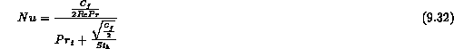

Stationary Pure Vapor
For filmwise condensation of a "stationary" saturated vapor, Nusselt (1916) presented the first analytical solution for heat transfer on a plane surface (Fig.9.1 ) with the following assumptions (Collier, 1981):
The mean value of the heat transfer coefficient over the whole surface was given by
One should note here that for a tube, L is replaced by the tube diameter, D, and 0.943 becomes 0.725. This model had been extended to include the effects of Nusselt's assumptions. In particular, Bromley (1952) considered the effects of subcooling within the liquid film and Rohsenow (1956) also allowed for a non-linear distribution of temperature through the film due to energy convection. The results indicated that the latent heat of vaporization,  , in Eq. (9) should be replaced by
, in Eq. (9) should be replaced by
However, it should be noted that in most engineering applications, the value of is small (typically less than 0.001) and can be neglected.
Sparrow and Gregg (1959) removed assumption (4) and included inertia forces and a convection term within the condensate film by using a boundary layer treatment for the condensate film. For common fluids with Prandtl numbers around and greater than unity, inertia effects are negligible for values of less than 2.0 For liquid metals with very low Prandtl numbers, however, the heat transfer coefficient falls below the Nusselt prediction with increasing when is greater than 0.001. Poots and Miles (1967) have looked at the effect of variable physical properties (assumption 2) on vertical plates. More recently Koh et al. (1961) and Chen (1961) included the influence of the drag exerted by the vapor on the liquid film. Both results show that the interfacial shear stress can reduce heat transfer due to the effect of "hold up" of the condensate film for low values of Pr, but this effect is small and steadily decreases with increasing Pr for Prandtl number greater than unity.
As a conclusion for pure steam-water condensation (Pr ;SPMgt; 1), Nusselt's assumptions can be accepted for a stationary vapor without noncondensable gas in practical engineering situations.
Moving Pure Vapor
The effects of vapor velocity and its associated drag on the condensate film have been found to be significant in many practical problems. For the case of vapor flow parallel to a horizontal flat plate, Cess (1960) presented uniform property boundary layer solutions, obtained by means of similarity transformations by neglecting the inertia and energy convection effects within the condensate film and assuming that the interfacial velocity was negligible in comparison with the free stream vapor velocity. Shekriladze and Gomelauri (1966) simplified the problem and also considered the case of an isothermal vertical plate with similar assumptions (1973). Mayhew et al. (1966, 1987) attempted to expand Nusselt's simple approach to take account of vapor friction as well as momentum drag. South and Denny (1972) proposed an interpolation formula for the interfacial shear stress in a simplified manner as Mayhew. However, such an interpolation formula only led to a small difference in the heat transfer rate.
Jacobs (1966) used an integral method to solve the boundary layer by matching the mass flux, shear stress, temperature and velocity at the interface. The inertia and convection terms in the boundary layer equations of the liquid film were neglected. The variation of the physical properties and the thermal resistance at the vapor-liquid interface were also neglected. Since Jacobs used an incorrect boundary condition for the vapor boundary layer, Fujii and Uehara (1972) solved the same problem with the correct boundary condition. In addition, the velocity profile in the vapor layer was taken as a quadratic. They presented the numerical results and their approximate expressions for the cases of free convection, forced convection, and mixed convection. The results show good agreement with numerical calculations and with Cess' approximate solution (1960).
The current recommendation in this area is the model developed by this latter work as a best estimate. One should be cautious as the Nusselt number increases because this implies a higher vapor and film flow with accompanying film turbulence, not accounted for in these models. For design purposes the recommendation is to use Nusselt laminar film model (Equ. 9.9), since it will predict a slightly lower heat transfer coefficient, with a thicker condensate film.
Stationary Vapor with a Noncondensable Gas
A noncondensable gas can exist in a condensing environment and leads to a significant reduction in heat transfer during condensation. A gas-vapor boundary layer (e.g., air-steam) forms next to the condensate layer and the partial pressures of gas and vapor vary through the boundary layer as shown in Fig. 9.2. The buildup of noncondensable gas near the condensate film inhibits the diffusion of the vapor from the bulk mixture to the liquid film and reduces the rate of mass and energy transfer. Therefore, it is necessary to solve simultaneously the conservation equations of mass, momentum and energy for both the condensate film and the vapor-gas boundary layer together with the conservation of specied for the vapor-gas layer. At the interface, a continuity condition of mass, momentum and energy has to be satisfied.
For a stagnant vapor-gas mixture, Sparrow and Eckert (1961) and Sparrow and Lin (1964) solved the mass, momentum and energy equations for laminar film condensation on an isothermal vertical plate by using a similarity transformation. Sparrow and Eckert (1961) considered the notion of the vapor-gas mixture from the downward motion of the condensate film, whereas Sparrow and Lin (1964) included free convection arising from density differences associated with composition differences. These analyses indicated that the condensing rate is dependent on the bulk gas mass fraction, the vapor-gas mixture Schmidt number, and . The numerical calculations show that the effect of the noncondensable gas increases with increasing Schmidt number and increasing value of . Since free convection arises from both the temperature and the concentration difference in a boundary layer, it is important when the vapor and the noncondensing gas have significantly different relative molecular weights and that its importance increases with increasing bulk gas mass fraction and increasing values of . Minkowycz and Sparrow (1965, 1966) also included free convection arising from temperature differences. In addition, the effect of interfacial resistance, superheating, thermal diffusion and property variation in the condensate film and in the vapor-gas mixture were considered and concluded to be less important except for superheating.
To reduce the computation time, Rose (1969) presented an approximate integral boundary layer solution assuming uniform properties except for density in the buoyancy term. Plausible velocity and concentration profiles for the vapor-gas boundary layer were used and it was assumed that these two layers had equal thickness. The results showed quite good agreement with those of Minkowycz and Sparrow and this is recommended for use.
Moving Vapor with a Noncondensable Gas
For a laminar vapor-gas mixture case, Sparrow, et al. (1967) solved the conservation equations for the liquid film and the vapor-gas boundary layer neglecting inertia and convection in the liquid layer and assuming the stream-wise velocity component at the interface to be zero in the computation of the velocity field in the vapor-gas boundary layer. Also a reference temperature was used for the evaluation of properties. The results showed that the effect of noncondensable gas for the moving vapor-gas mixture case is much less than for the corresponding stationary vapor-gas mixture. A moving vapor-gas mixture is considered to have a "sweeping" effect, thereby resulting in a lower gas concentration at the interface (compared to the corresponding stationary vapor-gas mixture case). Also, the ratio of the heat flux with a noncondensable gas to that without a noncondensable gas was calculated to be independent on the bulk velocity. The computed results reveal that interfacial resistance has a negligible effect on the heat transfer and that superheating has much less of an effect than in the corresponding free convection case.
Koh (1962) and Fujii et al. (1977) solved this problem without the simplifying assumptions used by Rose (1969) except for uniform properties and showed good agreement with the approximate analysis. Instead of solving a complete set of the conservation equations, Rose (1980) used the experimental heat transfer result for flow over the flat plate with suction (1979). Denny et al. (1971, 1972) also considered the case of downward vapor-gas mixture flow parallel to a vertical flat plate. They presented a numerical solution of similar mass, momentum and energy equations for a vapor-gas mixture by means of a forward marching technique. Interfacial boundary conditions at each step were extracted from a locally valid Nusselt type analysis of the condensate film. Local variable properties in the condensate film were evaluated by means of the reference temperature concept, while those in the vapor-gas layer were treated exactly. Asano et al. (1978) treated the condensate film as in the Nusselt analysis but assumed the interfacial shear stress was the same as that for single-phase flow over an impermeable plate.
The analytical model described above was solved using only a laminar vapor-gas (or pure vapor) boundary layer except for Mayhew (1966). Whitley (1976) proposed a simple model, which uses the analogy between heat and mass transfer for forced convection condensation of a turbulent mixture boundary layer by neglecting the interfacial velocity and treating the surface of the condensate film to be smooth. Kim (1990) improved on Whitley's approach for forced convection and natural convection applications by extending it to a wavy/turbulent film. By using well accepted correlations for a flat plate geometry, the solution procedure is simplified to computing the condensate film thickness and the local Reynolds and Sherwood numbers in the downstream direction. This leads to a computationally efficient solution, which can be easily expanded to include more detailed models of the condensate film. Total heat flow is controlled by the gas phase heat transfer and the heat flow through the condensate film. Therefore, the total condensation heat transfer coefficient can be written as:
Gas phase heat transfer consists of convection heat transfer and the latent heat released as a result of mass transfer. Radiation heat transfer can be neglected in the temperature range of interest (30- C). Hence hgas is given by
where is defined as:
The analogy between momentum-heat-mass transfer is used in order to find the heat and mass transfer coefficients along the plate. The friction factor and Stanton number are correlated by
For a smooth surface, the local skin friction factor can be correlated with the local Reynolds number, and a result like Whitley is obtained
By substituting equation 15 into equation 14, the local Nusselt number is obtained,
Utilizing Reynold's analogy between heat and mass transfer, equation 16 is modified to obtain the local Sherwood number:
The turbulent Prandtl and Schmidt numbers in these equations can be replaced with the equations derived by Jischa and Rieke (Kim, 1990). They derived the following results from transport equations of turbulent kinetic energy, heat flux and mass flux, as
where coefficients and were fitted to experimental data. The recommended values are given in the following table. Finally, the local Nusselt and Sherwood numbers for a smooth surface can be obtained by substitution of equations 18 and 19 in equations 16 and 17,
Heat and mass transfer coefficients can now be solved from 20 and 21, respectively. The condensation heat transfer coefficient hcond can then be obtained by substituting the following definition into equation 13,
where G is the mass transfer coefficient and W is the mass fraction.
The boundary layer thickness is reduced due to the apparent suction effect of the condensation process. This leads to larger temperature and concentration gradients close to the interface that, consequently, increase heat and mass transfer rates. The following correction factors were implemented to account for the suction effect,
where is defined as:
where is defined as:
where is defined as:
The droplets or waves that form on the condensate interface can increase the shear stress and lead to enhanced turbulent mixing at the interface. The effective surface area of the interface is also increased due to droplets and waves. The case where waves and droplets are present was modelled as a rough surface (Kim, 1990). Kim integrated the non-dimensional temperature profile and expressed the resulting Stanton number as a function of the turbulent Prandtl number, friction factor and a roughness parameter,
where the roughness parameter is based on experimental correlation,
where is the shear stress at the wall.
The Nusselt number can be solved from equation 20,

The Sherwood number can be obtained utilizing the Reynold's analogy and equations 31 and 32,

In the aforementioned equations, the effect of the condensate interface structure is included in the surface roughness parameter . In Kim's original model the interfacial waves were considered to influence the roughness parameter. A condensate film Reynolds number of 100 was used as a critical threshold value for wave formation. Kim used Wallis' correlation to account for waviness of the interface by linking it to the condensate film thickness .
The current recommendation in this area would be to use this simple engineering correlation of Kim as an estimate for most situations. If more exact estimates are necessary then other more detailed fluid mechanics analyses could be used for the bulk gas flow.